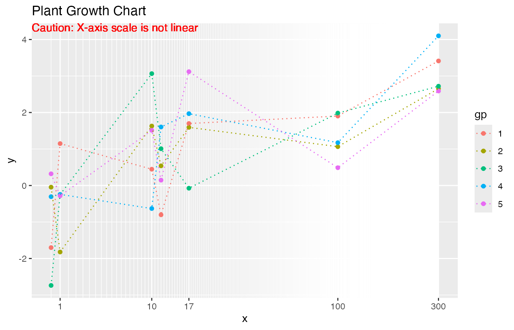

Background - Why using data derived axis transformation
For continuous values, the common options for the -axis scale could be either linear or log. Assume that the vector has a smaller number of distinct values. Some of those values could be clustered tightly while others are far away from the cluster. In such case, the plot could have an area that is overfilled and have other areas that are underused.
The function trans_composition() yields linear scale for
-axis
below a breaking point. All unique
values above the breaking point will be plotted in equal spaces in
between. The function trans_loglinear() is based on an
algorithm derived log transformation such that the
values could be spaced out for easier interpreting.
Caution - The use of nonlinear axis scale can be DISTORTION and MISLEADING. The use of transformed scales should be **clearly noted** in the text or on the figure to avoid misleading.
These transformations can work with position_dodge() and
other adjustments.
How to use
Below is an example of using default linear scaled axis. The x values are selected to demonstrate the situation that values are clustered at the lower side. As shown in the figure below, the details near are hard to be seen.
library(mtb)
library(ggplot2)
pdt=data.frame(x=rep(c(0.5, 1, 10,11.5,17, 100, 300), each=5), gp=factor(rep(seq(1,5),7)))
pdt$y=log10(pdt$x)+rnorm(length(pdt$x))
p=ggplot(pdt, aes(x=x, y=y, group=gp, color=gp))+geom_point()+geom_line()+
ggtitle("Plant Growth Chart")
pBelow is an example that shows how to use
trans_composition() with break point set as 50. Distinct
values above 50 are plotted with equal spaces in between. While using
non-linear transformed X-axis, it gives a distort sense regarding
distances between the last two measured time points. In addition to
that, the long distance between the last three
values makes the linear connections between observations less certain,
but the connections are still needed to identify individual groups. The
example below used dashed line above x=17 to have clearer indication of
the change of scales.
t=trans_composition(pdt$x, nb=30, brk=50, dab=1.5, dgrd=1, dgrd2=0.5)
p2=ggplot(pdt, aes(x=x, y=y, group=gp, color=gp))+geom_point()+
geom_line(pdt[pdt$x<=t$brk,], mapping=aes(x=x, y=y, group=gp, color=gp))+
geom_line(pdt[pdt$x>=max(pdt$x<=t$brk),], mapping=aes(x=x, y=y, group=gp, color=gp), lty=2)+
ggtitle("Plant Growth Chart")
p2+ scale_x_continuous(trans=t)+ geom_vline(xintercept=t$brk, lwd=6, alpha=0.7, color='lightgray')+ geom_text( x=-Inf, y=Inf, hjust=0, vjust=1, label='Caution: X-axis scale is not linear above 17', color='darkred')Below is another example that shows how to use
trans_composition() with break point set as 0. In this
example, all
values are plotted with equal spaces in between.
t=trans_composition(pdt$x, nb=30, brk=0, dab=2, dgrd=1, dgrd2=1)
p3=ggplot(pdt, aes(x=x, y=y, group=gp, color=gp))+geom_point()+
geom_line(lty=2)+ ggtitle("Plant Growth Chart")
p3+ scale_x_continuous(trans=t)+geom_text( x=-Inf, y=Inf, hjust=0, vjust=1, label='Caution: X-axis scale is not linear', color='darkred')Danger Zone - Please Use Responsibly
Below is an example that shows how to use
trans_loglinear(). The trans_loglinear()
transformation increases spaces between smaller x values and that might
be only appropriate in certain situations.
t=trans_loglinear(pdt$x, mindist=0.03)
p4=ggplot(pdt, aes(x=x, y=y, group=gp, color=gp))+geom_point()+
geom_line(lty=3)+ ggtitle("Plant Growth Chart")
p4+ scale_x_continuous(trans=t)+geom_text( x=-Inf, y=Inf, hjust=0, vjust=1, label='Caution: X-axis scale is not linear', color='red')
In some line plots, a straight line between two points is used to indicate that these two points are observations corresponding to the same group. Those straight lines are not necessarily indicate or hint linear trends between points. Also note that, for plots based on log scales, a straight line on a log-scale plot is a convex curve on a linear-scale plot.